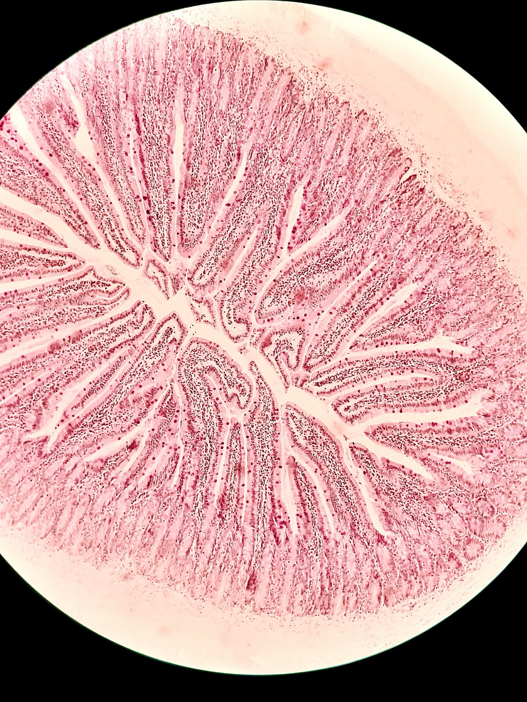

1.3 Digestion: Structure Makes Function Possible
Chapter 1.2 gave you a ladder with an organ system on rung seven. This chapter takes one — the digestive system — and asks what it actually does to a sandwich, hour by hour, and why each organ is shaped the way it is.
Two things from earlier chapters are doing the heavy lifting here.
From 1.1: a molecule can only enter a cell if it dissolves in the oily core of the membrane, or if there is a protein built to carry it. Large molecules do neither. That single fact is the reason digestion exists at all.
From 1.2: an emergent property is something an assembly can do that none of its parts can. Keep it in mind — every organ below can do exactly one thing, and none of them can feed you.
By the end of this chapter you should be able to
- Model the digestive tract and describe what happens in each compartment, in order.
- Explain how tissues, muscles and organs interact to digest food and absorb nutrients.
- Name the enzyme or secretion acting at each stage, and say what it produces — precisely.
- Explain how the structure of a tooth, a stomach wall and a villus each makes its function possible.
- Read evidence from a graph and use it to explain what has gone wrong in a real digestive disorder.
Why you have to do anything to food at all
Start with the question the unit's essential questions ask: why do we need to eat in order to stay alive? The obvious answer — for energy — is only half of it. You also eat for matter: the atoms your body is built from have to come from somewhere, and they arrive through your mouth. Chapter 1.8 follows those atoms. This chapter is about getting them in.
And getting them in is genuinely difficult, for a reason that comes straight out of Chapter 1.1. Food is made of enormous molecules — starch, protein, fat — and enormous molecules cannot cross a cell membrane. So the food has to be taken apart into pieces small enough to cross, before any of it counts as being "inside" you.
Here is an idea worth sitting with. The inside of your gut is not inside your body. It is a tube that runs from your mouth to your anus, open at both ends — topologically, you are a doughnut. Food in your stomach is no more inside you than a coin in your fist is inside your hand. It only becomes part of you at the moment it crosses a cell membrane in the wall of your small intestine. Everything before that moment is preparation.
So the job breaks into five processes, and it is worth having the names straight because they are easy to blur:
| Process | What it means |
|---|---|
| Ingestion | Taking food into the tube. Eating. |
| Mechanical digestion | Physically breaking food into smaller pieces. Nothing changes chemically; the pieces are simply smaller, so there is more surface for enzymes to work on. |
| Chemical digestion | Breaking the bonds within large molecules, using enzymes, so that big molecules become small ones. |
| Absorption | The small molecules crossing the gut wall into the blood or lymph. This is the moment food becomes you. |
| Egestion | Removing what was never absorbed. Not the same as excretion — see Chapter 1.5. |
The tube, drawn as a system
The diagram below is deliberately schematic rather than anatomical. It is drawn as boxes and arrows because that is what HS-LS1-2 asks a model to be: a picture of what acts on what, not a picture of what things look like.
That diagram says what acts on what. It does not say where any of it is, or how big anything is — and the relative sizes are part of the point. The model below is the real anatomy of the same seven organs. Turn it, and look for how much room the small intestine takes up compared with the stomach, and how the liver sits in front of nearly everything else.
The tract in three dimensions
InteractiveNow walk a real meal through it. The simulation below takes a cheese sandwich through all six compartments. At each one you decide which statements are true there before anything is explained — and some of the false options are claims that appear in real textbooks.
Follow the sandwich
Interactive- Commit to your whole selection before pressing the button, even where you are unsure. A wrong answer you committed to teaches you more than a right answer you hedged.
- Watch the "where the sandwich is now" panel between compartments. Which of the three foods is finished first, and which is finished last?
- Two of the false statements in the stomach and duodenum are errors that appear in widely used teaching materials. Can you tell which two before the explanations appear?
Structure makes function possible
This is the crosscutting idea the chapter is named for, and it is the one that turns a list of organs into an explanation. In biology, the shape of a structure is never an accident, and it is never decorative. If a structure is folded, branched, thickened, roughened or coiled, that shape is doing a job — and you can usually work out what the job is by asking what needs to cross, or resist, or mix.
Three examples from this chapter, in order of size.
A tooth
You have four kinds of tooth and each one is a different tool:
- Incisors at the front are flat and chisel-edged — for cutting a piece off.
- Canines are pointed — for gripping and tearing.
- Premolars and molars at the back are broad with a bumpy surface — for crushing and grinding.
Notice the arrangement as well as the shapes. Cutting teeth are at the front, where food arrives; grinding teeth are at the back, where the tongue pushes food that has already been cut. The layout is part of the structure.
And ask what all of this is for. Chewing changes nothing chemically. What it does is turn one lump with a small surface into many pieces with a large total surface — the identical trick you will meet again in Chapter 1.4, and the reason it works is arithmetic rather than biology.
A stomach wall
The lining of your stomach is thrown into deep folds called rugae, and its muscular wall has three layers running in three different directions rather than the usual two. Both features answer a need:
- The folds let the stomach expand from about 75 mL empty to well over 1 L after a large meal, then flatten back down. A smooth bag would have to be permanently large.
- Three muscle layers in three directions mean the stomach can genuinely churn — twist and knead — rather than merely squeeze along its length. That is mechanical digestion, and it is what turns a bolus into chyme.
The wall also has to survive acid strong enough to dissolve metal. It does that with a thick layer of alkaline mucus, and by replacing its entire lining every few days. When that defence fails — often because of the bacterium Helicobacter pylori — the acid digests the wall itself, and the result is an ulcer.
A villus

A villus is a finger-shaped projection of the intestinal lining, about 1 mm long, and the wall of your small intestine carries millions of them. Every cell on the surface of a villus is itself covered in thousands of much smaller projections called microvilli. Under a microscope the effect looks like a brush, which is why the surface is called the brush border.
Work through what each feature buys you:
| Structure | What it makes possible |
|---|---|
| Finger shape, in millions | Enormously more surface than a flat lining, so more absorption per second |
| Microvilli on every cell | Multiplies the surface again — and holds the final digestive enzymes, built into the membrane itself |
| Wall only one cell thick | The distance from food to blood is a few micrometres, so diffusion is fast |
| Dense capillary network inside | Carries absorbed sugar and amino acids away, keeping the concentration inside low so absorption keeps going |
| Lacteal in the core | A lymph vessel wide enough to take the fat packages that will not fit into a capillary |
| 6 metres of it | Time. Food is in contact with this surface for three to five hours |
Look at the fourth row again, because it is the one people miss. The capillaries are not just a delivery lorry — they are part of the absorbing mechanism. Diffusion only continues while there is a difference in concentration. By carrying glucose away the moment it arrives, the blood keeps the inside of the cell empty, and so keeps the gradient alive. Take the blood supply away and absorption would stop within minutes, even though nothing about the villus itself had changed.
Who does what: the chemical work, stated precisely
Chemical digestion is done by enzymes — proteins that speed up one specific reaction without being used up. Each one works on one kind of bond, in one kind of molecule, and only within a narrow range of pH. That specificity is why you need so many of them.
| Where | Secretion | Acts on | Produces | pH |
|---|---|---|---|---|
| Mouth | Salivary amylase | Starch | Maltose | ~7 |
| Stomach | Hydrochloric acid | — | Kills microbes; unfolds proteins; activates pepsin | ~2 |
| Stomach | Pepsin | Protein | Peptides — shorter chains, not single amino acids | ~2 |
| Small intestine | Bile (from the liver, stored in the gall bladder) | Fat | Nothing chemically — emulsification: large globules are broken into tiny droplets | — |
| Small intestine | Hydrogencarbonate (from the pancreas) | Stomach acid | Neutral conditions, about pH 8 | — |
| Small intestine | Pancreatic amylase | Remaining starch | Maltose | ~8 |
| Small intestine | Pancreatic protease (trypsin, chymotrypsin) | Peptides | Shorter peptides and some amino acids | ~8 |
| Small intestine | Pancreatic lipase | Emulsified fat | Fatty acids and glycerol | ~8 |
| Villus membrane | Maltase, peptidases | Maltose; short peptides | Glucose; single amino acids | ~8 |
1. Pepsin does not produce amino acids. It is an endopeptidase — it cuts within a protein chain, so what comes out is shorter chains, called peptides. Single amino acids appear much later, in the small intestine, from trypsin, chymotrypsin and the peptidases built into the villus membrane. Several widely used sets of teaching slides state that pepsin makes amino acids. They are wrong, and the mistake matters because it removes the reason the small intestine needs proteases at all.
2. Bile does not neutralise the acid. Bile emulsifies fat; it contains no enzyme and changes nothing chemically. The neutralising is done by hydrogencarbonate ions in pancreatic juice. This is worth getting right because it is the reason the pancreas has a duct into the duodenum: every enzyme working downstream would be destroyed at pH 2, so the acid has to be dealt with before they arrive.
3. Emulsifying is not digesting. A large fat globule broken into a thousand small droplets is still exactly the same amount of exactly the same molecule. What has changed is the surface area — and lipase can only work on a surface. Bile and lipase are a pair: one makes the surface, the other does the chemistry on it.
Two ideas that keep coming back
Look back at the table and you will see the same two moves repeated in every compartment.
Surface area first, chemistry second. Teeth before amylase. Churning before pepsin. Bile before lipase. Every time the body wants a chemical reaction to go faster, it increases the surface the reaction can happen on. That is a completely general principle and Chapter 1.4 is about the arithmetic behind it.
Conditions have to be managed, not assumed. Pepsin needs pH 2 and is destroyed at pH 8. Pancreatic enzymes need pH 8 and are destroyed at pH 2. The same body has to provide both, six inches apart, and does it by making the acid in one compartment and neutralising it as the contents leave. That is a control problem, and control problems are Chapter 1.6.
Using the evidence: the case of poor protein digestion
Hypochlorhydria means low stomach acid. It has several causes — long-term use of acid-reducing medicines, damage to the stomach lining, and simply getting older. People with it are prone to infections and to nutritional deficiencies, and they have particular trouble digesting one of the three major foods.
Researchers measured how much of each food type was still present at the output of each digestive organ, in a control group and in a group with hypochlorhydria. A value of 10 means the food is still fully intact; 0 means it has been completely broken down.
Answer these for yourself before opening the explanations. Write your answers down — an answer you have committed to in writing is worth several you merely thought about.
- Which food type is affected, and at which organ does the difference first become visible?
- Fibre sits at 6 all the way across both graphs and leaves unchanged. Why?
- Carbohydrate drops from 10 to 8 at the mouth and then stops falling until the small intestine. Explain both parts of that.
- Hypochlorhydria is a problem in the stomach. So why is the difference between the two graphs not visible until the small intestine?
1 and 2 — which food type, and why does fibre never change?
Protein, and the difference is first visible at the small intestine — the point where the control group's protein reaches 0 and the hypochlorhydria group's only reaches 4.
Fibre is cellulose, a carbohydrate built from glucose with a type of bond that no human enzyme can break. You have no cellulase. So fibre passes through chemically untouched and leaves in the faeces — which is precisely why it is useful: it gives the muscular wall something to push against, and it feeds the bacteria in your large intestine.
3 — why carbohydrate falls at the mouth and then pauses
It falls at the mouth because salivary amylase begins cutting starch into maltose. It stops falling in the stomach because amylase is a protein that works at about pH 7 — the moment it meets stomach acid at pH 2 it is denatured and stops working. Carbohydrate digestion is therefore suspended for the two to four hours the food spends in the stomach, and only restarts in the small intestine when pancreatic amylase arrives into neutralised chyme.
That is a nice illustration of the point at the end of the last section: the same molecule is a working enzyme in one compartment and a destroyed one six inches later.
4 — why the effect of a stomach problem only appears downstream
Because on this scale the stomach never finishes protein anyway. Look at the control graph: protein leaves the stomach at 10, apparently untouched. That is not because nothing happened — pepsin has cut the long chains into peptides — but the measurement is of how much protein-derived material is still there, and cutting a chain in half does not remove any of it.
What low acid actually destroys is the preparation. Without acid, protein is not denatured (so its bonds are folded away out of reach), and pepsinogen is never converted into active pepsin. Protein therefore arrives in the small intestine as long, tightly folded chains rather than short accessible peptides. The pancreatic proteases are still present and still working — that is why the line falls from 10 to 4 rather than staying at 10 — but they cannot finish the job on their own in the time available.
Two general lessons. First, a failure at one point in a system shows up somewhere else, which is why tracing the whole chain matters more than memorising organs. Second, the stomach's real contribution to protein digestion is not finishing it — it is making it possible for the next organ to finish it.
Where this goes next
Every explanation in this chapter came back to the same move. Chewing increased surface area. Churning increased surface area. Emulsification increased surface area. Villi increased surface area, and microvilli increased it again on top of that.
That is four instances of one idea, and it is time to do the arithmetic behind it properly. Chapter 1.4 asks why folding buys so much, why a cell cannot simply grow bigger instead, and why the same ratio that explains a villus also explains why diarrhoea kills hundreds of thousands of children every year.
Check your understanding
The pancreas sends two quite different things into the duodenum. Name both, say what each is for, and explain why they have to arrive before the food reaches the rest of the small intestine.
Digestive enzymes — amylase for starch, proteases such as trypsin and chymotrypsin for peptides, and lipase for fat — and hydrogencarbonate ions, which are alkaline.
The hydrogencarbonate neutralises the acidic chyme arriving from the stomach, raising the pH from about 2 to about 8. It has to happen first, and it has to happen at the very start of the small intestine, because every one of those pancreatic enzymes is a protein with an optimum near pH 8 and would be denatured at pH 2. Send the enzymes into un-neutralised chyme and they would be destroyed before doing any work.
This is also why bile does not do this job. Bile emulsifies fat; the neutralising is the pancreas's.
A patient has their gall bladder removed and afterwards has difficulty digesting fatty meals, even though their pancreas is entirely healthy and still makes normal amounts of lipase. Explain.
Lipase can only act on the surface of a fat droplet, because fat does not dissolve in the watery contents of the gut. Bile is what creates that surface: it breaks large globules into thousands of tiny droplets, multiplying the total surface area available to the enzyme by an enormous factor. Without emulsification, a normal amount of lipase is working on a tiny fraction of the fat at any moment, and fat digestion becomes very slow.
The liver still makes bile after the gall bladder is removed, so bile is not absent — but it now trickles continuously into the duodenum instead of being stored and released as a concentrated dose when a fatty meal arrives. Small meals are handled; a large fatty meal outpaces the supply. The structure that was lost was a storage-and-timing structure, and losing it changed function exactly as the structure–function principle predicts.
Design a physical model of a villus that a classmate could use to explain absorption. Say what you would use for each part, and name one thing your model would get badly wrong.
One reasonable answer: a knitted or towelling finger (the villus, with the loops standing in for microvilli), red string threaded through its middle (the capillary network), a white straw up the centre (the lacteal), and a sheet of the same towelling representing the intestinal lining with dozens of fingers on it. Coloured beads of two sizes could be the nutrients — small beads pass through the towelling into the string, large beads only fit the straw.
Any model with those features is doing the essential work: showing that the surface is folded, that there are two separate transport routes leaving, and that they take different cargo.
What it gets badly wrong: it makes absorption look like filtering by size, with small things fitting through gaps and large things not. That is a dialysis membrane, not a cell membrane. As Chapter 1.1 established, what crosses a real membrane is decided mainly by chemistry — a sodium ion is far smaller than a carbon dioxide molecule and cannot cross, while glucose needs a specific protein carrier and fat simply dissolves through. Being able to name that failure is the difference between using the model and believing it.
Quick check
These mark themselves, and point you back to the right section when an answer goes wrong.
At what moment does a mouthful of sandwich become part of your body?
Topologically you are a doughnut, and the inside of the gut is outside your body. Everything before absorption is preparation — which is exactly why absorption, not digestion, is the point of the whole system.
A swallowed vitamin capsule travels the whole length of the tract and leaves unchanged in the faeces. Was it ever inside your body?
The boundary of your body is not the skin alone — it runs on through the lining of the gut. That is also the difference between egestion and excretion: what leaves in the faeces was never absorbed, and so was never part of you to remove.
Chewing breaks a piece of bread into twenty smaller pieces. What has that achieved chemically?
Mechanical digestion changes size, not chemistry. This is the move the chapter keeps repeating — teeth before amylase, churning before pepsin, bile before lipase. Surface area first, chemistry second, every time.
The stomach churns a bolus into chyme. Which of the five processes is that, and what has it changed?
Mechanical and chemical digestion are easy to blur because they run at the same time in the same place. The test is whether a bond inside a molecule has been broken. Churning breaks none — it simply gives pepsin more surface to land on.
Cut the blood supply to a villus but leave the villus itself completely undamaged. What happens to absorption, and why?
This is the row of the table people read past. Diffusion only continues while there is a difference in concentration. By carrying glucose away the instant it arrives, the capillaries keep the inside of the cell empty — they are part of the absorbing mechanism, not just the delivery lorry.
The lacteals along a stretch of small intestine are blocked, while the villi themselves and their capillaries are untouched. What would you expect?
A villus has two exits because it carries two kinds of cargo, and each exit does the same job for its own cargo — keeping the inside of the cell empty so more can follow. Block either one and the surface above it stops absorbing, though nothing about that surface has changed.
The stomach lining is thrown into deep folds, and its muscular wall has three layers running in three directions instead of the usual two. What do those two features buy?
Two features, two different jobs, and each answers a need. A smooth bag would have to be permanently large; two muscle layers could only squeeze along the tube. Three layers in three directions is what makes genuine churning — and therefore chyme — possible.
Incisors are flat-edged and sit at the front of the jaw; molars are broad and bumpy and sit at the back. Why does the arrangement matter as well as the shapes?
Structure includes arrangement, not only shape. Four tools in the wrong order would still be four tools — you would simply have nothing for the grinding surfaces to work on when the food arrived.
Protein leaves the stomach. What has pepsin produced?
Pepsin is an endopeptidase — it cuts within a chain, so what comes out is shorter chains. Getting this right matters because the wrong version removes the reason the small intestine needs proteases at all.
Salivary amylase has been working on a mouthful of bread for a minute. What has it produced?
Digestion runs to the end in small steps, and each step has its own enzyme. Amylase makes maltose, maltase makes glucose, and that final cut happens in the membrane of the very cell about to absorb the product.
Chyme arriving in the duodenum is at about pH 2. Which secretion deals with that, and why does it have to happen first?
Two secretions, two entirely different jobs. Bile emulsifies; bicarbonate neutralises. And the order is forced: every pancreatic enzyme has an optimum near pH 8, so sending them into un-neutralised chyme would destroy them before they did any work.
Suppose the pancreatic hydrogencarbonate arrived a metre further down the small intestine instead of at the duodenum, with the enzymes still entering where they do now. What would go wrong?
Conditions have to be right before the machinery arrives, not afterwards. That is why the neutralising happens at the head of the small intestine rather than anywhere along it — and why the pancreas sends both things down the same duct, to the same place, at the same moment.
In Figure 1.11 the hypochlorhydria group's problem is in the stomach, yet the two graphs only diverge at the small intestine. What is the best explanation?
Cutting a chain in half removes none of it, so protein leaves a healthy stomach still reading 10. What acid actually provides is preparation: unfolding the protein and activating pepsin. Without it, protein reaches the small intestine long and tightly folded, and the pancreatic enzymes cannot finish in the time available. A failure at one point in a system shows up somewhere else.
In Figure 1.11 carbohydrate drops from 10 to 8 at the mouth and then holds at 8 right through the oesophagus and stomach. What explains the pause?
A flat line here means no chemical change, not no activity. Amylase is a protein, and it spends the entire stomach stage denatured — the same molecule is a working enzyme in one compartment and wreckage six inches later.